Portfolio
marina ervits
Senior design leader specializing in women’s contemporary knitwear.
I build commercially successful sweater assortments by connecting trend, yarn innovation, technical execution, vendor strategy, and measurable retail results.
About
Strategic design leadership for scalable, trend-forward sweater collections.
Marina Ervits brings 18 years of expertise in women’s contemporary fully fashioned sweaters, combining yarn R&D, stitch engineering, commercial trend translation, and cost-to-value optimization. Her work bridges creative vision and operational execution for major retail partners.
Brand revitalization
Global vendor stewardship
Critical path ownership
Cross-functional influence
Business Impact
Experience
Brand revitalization, high-volume assortments, and global product execution.
Senior Design Leader
Led transformation work for On 34th, delivering more than 300 styles annually, improving speed-to-market by 15%, and protecting design integrity across complex product lifecycles.
Designer
Directed seasonal development of high-volume knit and sweater assortments while managing critical path timelines, proprietary yarn and trim R&D, and cross-functional partnerships.
Designer
Translated seasonal trends into original sketches and runway mood boards while sourcing premium Italian and Asian materials for elevated knitwear structures.
Designer
Supported a brand launch through detailed tech packs, stitch development, lab dip approvals, and global factory corrections for multi-category knitwear.
Core Expertise
Fully Fashioned Knitwear
Yarn R&D
Cost Engineering
Technical Construction
Global Vendor Stewardship
Brand Revitalization
Team Leadership
PLM
Adobe Creative Suite
Digital Storyboarding
AI Integrated Workflow
Excel
Process Signals
Trend research
Global market reads become seasonal stories, key silhouettes, and commercially timed deliveries.
Yarn sourcing
Fiber blends, gauges, trims, and hand-feel are evaluated against cost, margin, and customer value.
Stitch engineering
Fully fashioned construction, jacquard, intarsia, rib, tuck, and cable structures carry the concept.
Fit approval
Technical specs, vendor iteration, and sample reviews protect quality from concept to production.
Collections
Selected On 34th sweater direction across Fall, Holiday, and transitional deliveries.
These case studies translate the PDF deck into web-native chapters, pairing editorial direction with product development details, process cues, and key-item storytelling.
Collection 01 · Fall 2025
In an English Country Garden
A town-and-country blend of tweed, plaid, heritage sweaters, playful patterns, trench coats, and feminine mischief for modern life.
- Objective
- Refresh the classic contemporary customer with a clear Q3/Q4 point of view.
- Strategy
- Use cables, lofty yarns, and mix-and-match sets to balance heritage codes with newness.
- Execution
- Translate yarn checklists and fit approvals into scalable key-item programs.
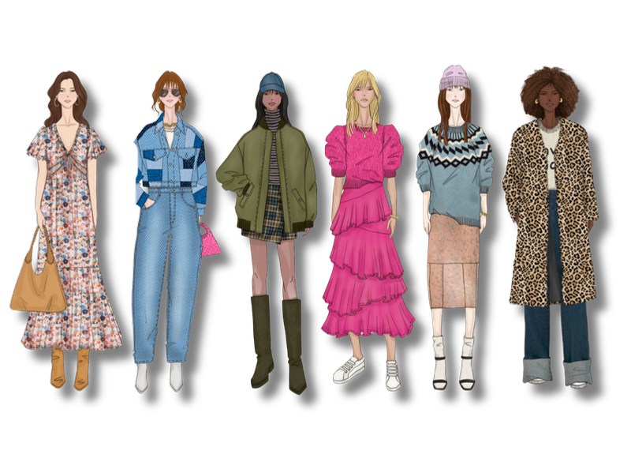
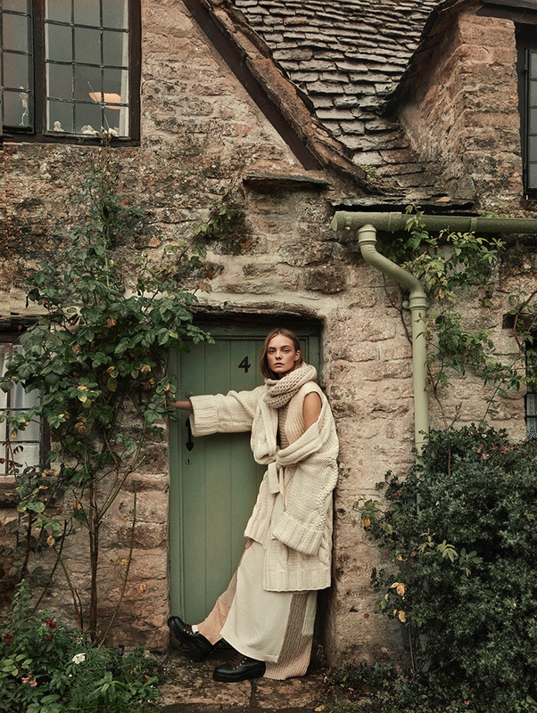
Collection 02 · Holiday 2025
All That Glitters
Effortless sparkle for a country New Year’s Eve: shimmering textures, ruffles, cozy sweaters, high-pile yarns, and bold graphics.
- Objective
- Build an easy holiday table around cozy shine, comfort, and broad outfit versatility.
- Strategy
- Combine high pile, tinsel shine, cloud-soft yarns, and graphic motifs for emotional pull.
- Outcome Signal
- Selected table programs show top-volume-driver and best-seller performance notes.
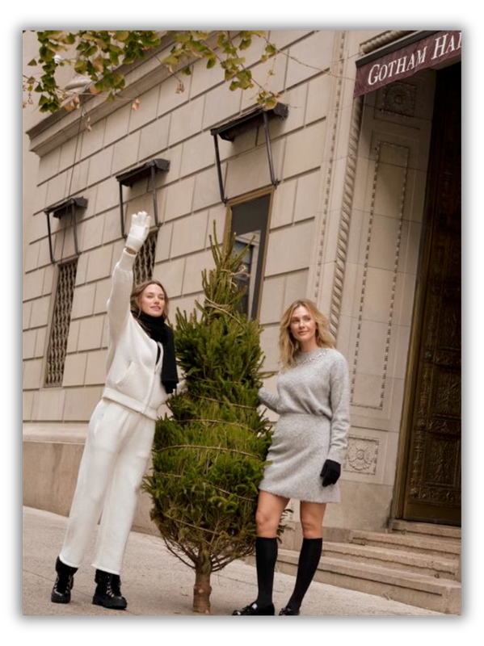
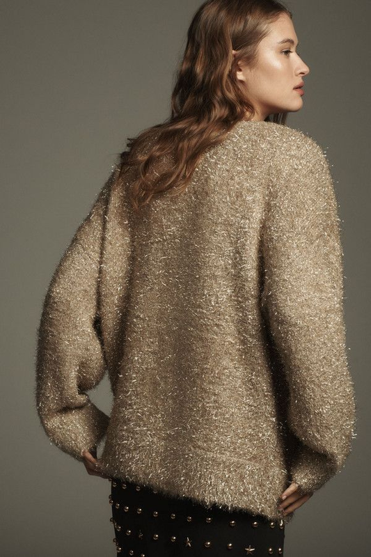
Collection 03 · Trans 2026
Brighter Days
Buttery yellows, effortless matching sets, whimsical prints, denim, lightweight outerwear, and Valentine’s charm for in-between seasonal dressing.
- Objective
- Move the customer from festive winter into spring with optimism and practical layering.
- Strategy
- Anchor the delivery in ribbed sets, shrunken cardigans, romantic brights, and heart graphics.
- Execution
- Use intarsia, rib, tuck stitch, and recycled yarn blends to keep novelty production-ready.

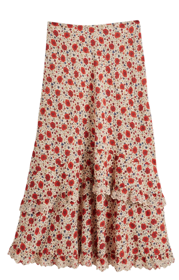
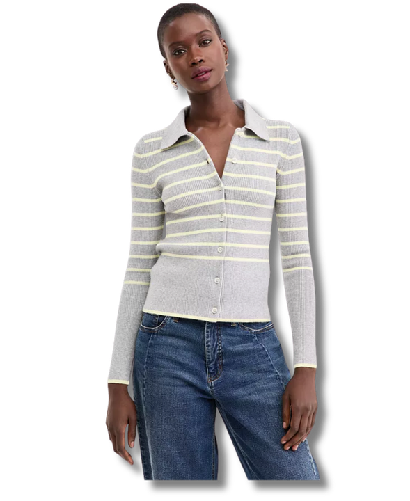
Featured Product Projects
Key items with stronger context, technical detail, and business relevance.
A curated set of development stories gives hiring teams a faster read on Marina’s range: commercial programs, novelty graphics, fit approvals, yarn decisions, and scalable construction.
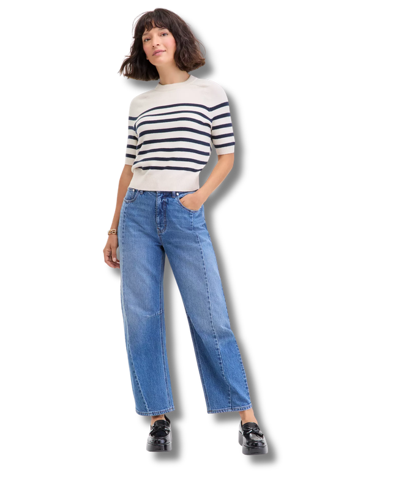
Key Item Program
Saddle Sleeve Sweater Tee
Light recycled-polyester blends, jersey construction, rib trims, and fit approval discipline supported a top-volume-driver program with 90% STU YTD noted in the deck.
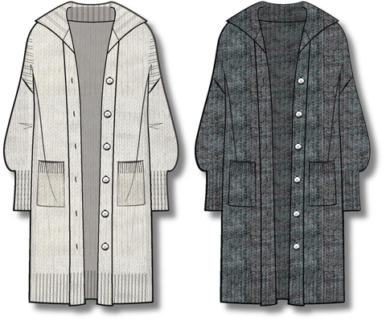
Set Architecture
Mix + Match Sweater Set
Birdseye jacquard, tubular trims, doubled rib waist construction, and shank-button details translated trend direction into a flexible outfit-building program.
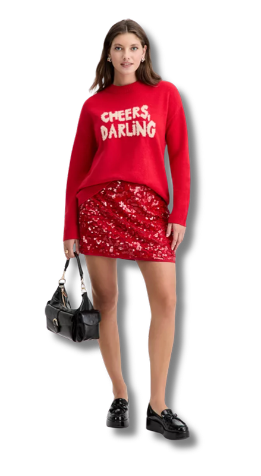
Holiday Table
Graphic Sparkle Crew
Ladderback jacquard, metallic yarn, and comfort-driven novelty made the holiday graphic story scalable, with 86-90% STU YTD signals on selected executions.
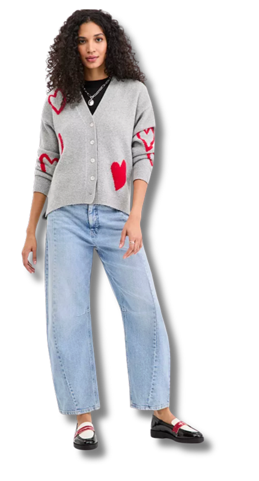
Valentine Novelty
Heart Cardigan
Intarsia motifs, faux horn buttons, and recycled-polyester stretch yarn brought seasonal charm into a wearable shrunken-cardigan shape.
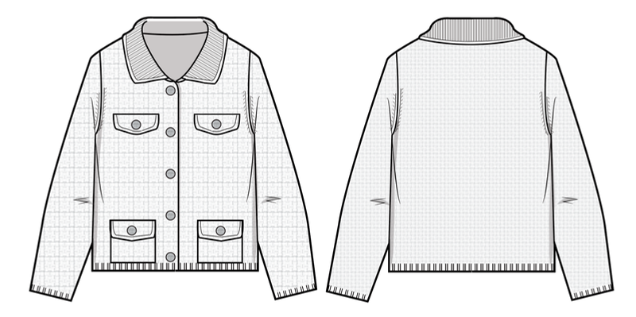
Refined Layering
Collared Sweater Jacket
Tuck stitch, tubular collar and pocket finishing, self-covered buttons, and flat-back rib trims show technical polish in a versatile transitional layer.
Resume
18 years of contemporary knitwear leadership, from runway craft to scaled retail execution.
Current Focus
Senior Design Leader for RTW knitwear at Macy’s Inc, leading On 34th sweater strategy, premium cashmere initiatives, monthly trend analysis, and end-to-end line development.
Operating Strength
Balances design-to-value, high-precision tech packs, vendor partnerships, and cross-functional alignment with Merchandising, Product Development, Technical Design, and buying stakeholders.
Credentials
BFA in Fashion Design from Fashion Institute of Technology with a knitwear specialization. Guest judge for FIT’s Future of Fashion/Macy’s Empowered Design Award.